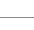

|
 |
|||||
|  | ||||||
S2JSF 1.0.x から 1.1.x への移行ガイドバージョン1.0系で作成されたアプリケーションを、1.1系へ移行するためには、次の作業が必要です。(S2JSF1.0.17-example から S2JSF1.1.0-beta3-exampleへの移行を念頭においています。) jarファイルの入れ替え以下のjarファイルを削除する。
以下のjarファイルを追加する。
web.xmlの修正myfacesの記述を消し、teedaの記述を加える。
listenerの設定を修正MyFacesのListener登録してあったところを、TeedaのListenerに置き換える。<listener> <listener-class>org.apache.myfaces.webapp.StartupServletContextListener</listener-class> </listener>を <listener> <listener-class>org.seasar.teeda.core.webapp.TeedaConfigureListener</listener-class> </listener>に変更する。 filterの設定を修正<filter>のrequestDumpFilterの記述を削除diconの修正
[1]<component class="org.seasar.teeda.core.render.DefaultComponentIdLookupStrategy" /> [2]<component class="org.seasar.teeda.core.render.JsfSpecComponentIdLookupStrategy" /> *2:jsf.diconのErrorMessageFinderクラスの指定先を[1]から[2]に変更する。 [1]<component name="errorMessageFinder" class="org.seasar.jsf.util.ErrorMessageFinder" /> [2]<component name="errorMessageFinder" class="org.seasar.teeda.core.util.ErrorMessageFinder" /> MyFacesの拡張コンポーネント使用時
ファイルアップロード機能は、S2JSFでは提供していません。 MyFacesのinputFileUploadを使用している場合は以下の手順により使用可能になります。 以下のjarファイルをWEB-INF/libに追加します。
jsf.diconに以下のMyFacesの拡張タグを追加します。 <initMethod name="addTaglibUri"> <arg>"x"</arg> <arg>"http://myfaces.apache.org/tomahawk"</arg> </initMethod> web.xmlに以下のfilterとfilter-mappingを設定します。
<filter>
<filter-name>extensionsFilter</filter-name>
<filter-class>org.apache.myfaces.component.html.util.ExtensionsFilter</filter-class>
<init-param>
<param-name>uploadMaxFileSize</param-name>
<param-value>100m</param-value>
<description>Set the size limit for uploaded files.
Format: 10 - 10 bytes
10k - 10 KB
10m - 10 MB
1g - 1 GB
</description>
</init-param>
<init-param>
<param-name>uploadThresholdSize</param-name>
<param-value>100k</param-value>
<description>Set the threshold size - files
below this limit are stored in memory, files above
this limit are stored on disk.
Format: 10 - 10 bytes
10k - 10 KB
10m - 10 MB
1g - 1 GB
</description>
</init-param>
<init-param>
<param-name>uploadRepositoryPath</param-name>
<param-value>/temp</param-value>
<description>Set the path where the intermediary files will be stored.
</description>
</init-param>
</filter>
<filter-mapping>
<filter-name>extensionsFilter</filter-name>
<url-pattern>*.html</url-pattern>
</filter-mapping>
|
||
| Copyright© 2004-2005, The Seasar Foundation and the others. All rights reserved. |